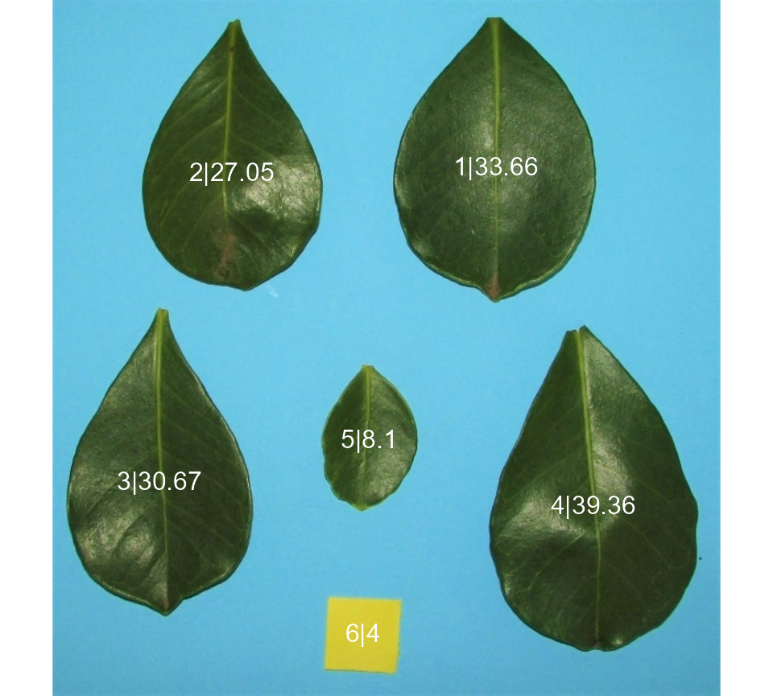
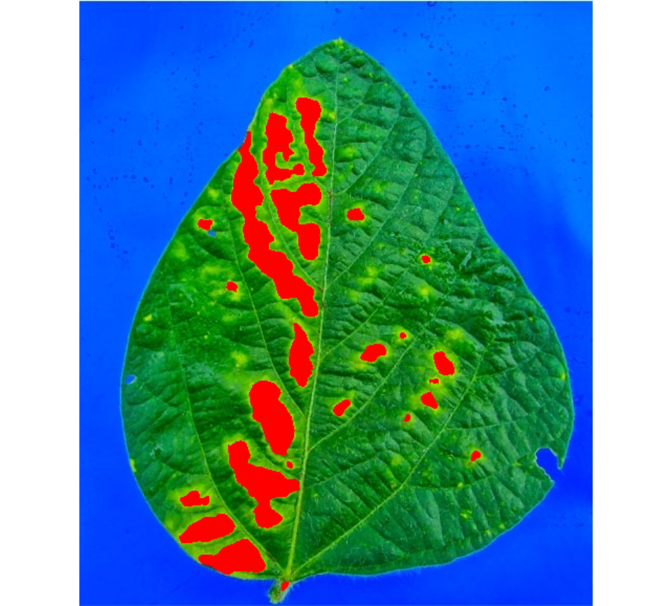

Getting started
pliman (plant image analysis) is designed to analyze plant images, especially related to leaf analysis. You provide color palettes, tell pliman what each one represents, and it takes care of the details. The package will help you to:
- Measure leaf area with
leaf_area(). - Measure disease severity with
symptomatic_area(). - Count the number of lesions with
count_lesions(). - Count objects in an image with
count_objects(). - Get the RGB values for each object in an image with
objects_rgb(). - Get object measures with
get_measures(). - Plot objec measures with
plot_measures().
Leaf area
The function leaf_area() can be used to computes the leaf area using an image with leaves and a template with a known area. A general linear model (binomial family) fitted to the RGB values is used to first separate the leaves and template from the background and then the leaves from the template. The leaf area is then calculated for each leaf based on the pixel area.
In the following example, the area of five three leaves will be computed using a reference template with a known area of 4 cm\(^2\).
library(pliman)
# |========================================================|
# | Tools for Plant Image Analysis (pliman 0.3.0) |
# | Author: Tiago Olivoto |
# | Type 'vignette('pliman_start')' for a short tutorial |
# | Visit 'https://bit.ly/3eL0dF3' for a complete tutorial |
# |========================================================|
img <- image_import(image_pliman("la_pattern.JPG"))
leaf <- image_import(image_pliman("la_leaf.jpg"))
tmpl <- image_import(image_pliman("la_temp.jpg"))
background <- image_import(image_pliman("la_back.jpg"))
image_combine(img, leaf, tmpl, background)
# Computes the leaf area
area <-
leaf_area(img = img,
img_leaf = leaf,
img_template = tmpl,
img_background = background,
area_template = 4,
text_col = "white")
get_measures(area)
# -----------------------------------------
# Total leaf area : 142.724
# Average leaf area: 23.787
# -----------------------------------------
# id x y area perimeter radius_mean radius_min radius_max
# 1 1 510.870 194.816 33.623 748 130.927 113.109 174.695
# 2 2 206.729 201.344 27.026 709 119.412 93.029 170.339
# 3 3 123.420 557.361 30.651 787 128.717 95.703 189.297
# 4 4 622.974 585.408 39.340 863 143.373 108.206 202.830
# 5 5 364.747 508.590 8.085 375 64.294 51.447 86.207
# radius_sd radius_ratio
# 1 15.337 1.544
# 2 19.262 1.831
# 3 24.557 1.978
# 4 25.136 1.874
# 5 9.710 1.676Counting crop grains
Here, we will count the grains in the image soybean_touch.png. This image has a cyan background and contains 30 soybean grains that touch with each other.
soy <- image_import(image_pliman("soybean_touch.jpg"))
image_show(soy)
# Count the objects in the image
grains <- count_objects(soy)
#
# --------------------------------------------
# Number of objects: 30
# --------------------------------------------
# statistics area perimeter
# min 1366.0000 117.000000
# mean 2057.3667 146.600000
# max 2445.0000 158.000000
# sd 230.5574 8.406073
# sum 61721.0000 4398.000000
# Draws the object id (by default)
plot_measures(grains)
Disease severity
The function symptomatic_area() is used to compute the percentage of symptomatic leaf area in a sample or entire leaf based on provided color palettes samples. A general linear model (binomial family) fitted to the RGB values is used to segment the lesions from the healthy leaf. If a pallet of background is provided, the function takes care of the details to isolate it before computing the number and area of lesions.
The next example computes the symptomatic area of a soybean leaf. The proportion of the healthy and symptomatic areas is given as the proportion of the total leaf area, after segmenting the leaf from the background (blue).
img <- image_import(image_pliman("sev_leaf.jpg"))
healthy <- image_import(image_pliman("sev_healthy.jpg"))
symptoms <- image_import(image_pliman("sev_sympt.jpg"))
background <- image_import(image_pliman("sev_back.jpg"))
image_combine(img, healthy, symptoms,background)
# Computes the symptomatic area
symptomatic_area(img = img,
img_healthy = healthy,
img_symptoms = symptoms,
img_background = background,
show_image = TRUE)
# healthy symptomatic
# 1 89.03889 10.96111RGB values for objects
The function objects_rgb() can be used to get the Red Green and Blue (RGB) for objects in an image. Here, the RGB for
img <- image_import(image_pliman("soy_green.jpg"))
# Segment the foreground (grains) using the normalized blue index
# Shows the average value of the blue index in each object
rgb <- objects_rgb(img, marker = "index")
# Draw the object id
image_show(img)
plot_measures(rgb)
# plot the distribution of RGB values of each object
plot(rgb)
Getting help
If you encounter a clear bug, please file a minimal reproducible example on github
Suggestions and criticisms to improve the quality and usability of the package are welcome!